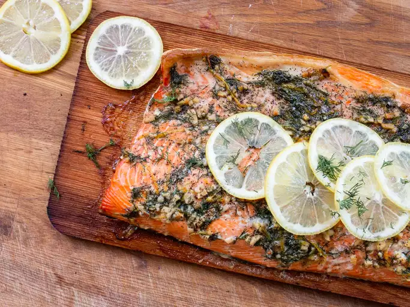

Cedar-Plank Grilled Salmon

Description
Cooking a lemon and dill seasoned whole salmon fillet on a smoldering cedar plank adds a touch of smoke to a
beautiful fish!
Ingredients
- 1 (3 pound) whole filet of salmon, skin on, scored (up to but not through the skin) into serving pieces
- 6 tablespoons extra-virgin olive oil
- 4 large garlic cloves, minced
- 1/4 cup minced fresh dill
- 2 teaspoons salt
- 1 teaspoon ground black pepper
- 1 teaspoon lemon zest, plus lemon wedges for serving
Steps
- Soak an untreated cedar plank (or planks) large enough to hold a side of salmon (5 to 7 inches wide and 16
to 20 inches long) in water, weighting it with something heavy, like a brick, so it stays submerged 30
minutes to 24 hours.
- When ready to grill, either build a charcoal fire in half the grill or turn grill burners on high for 10
minutes. Meanwhile, mix oil, garlic, dill, salt, pepper and lemon zest; rub over salmon and into scored
areas to coat.
- Place soaked cedar on hot grill grate, close lid, and watch until wood starts to smoke, about 5 minutes.
Transfer salmon to hot plank, move salmon off direct charcoal heat or turn burners to low, and cook covered
until salmon is just opaque throughout (130 on a meat thermometer inserted in the thickest section) 20 to 25
minutes or longer, depending on thickness and grill temperature. Let sit 5 minutes; serve with lemon wedges.